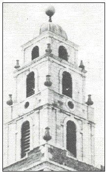

The church in architectural terms is best known for its
three-storey tower, over 170 feet high with walls 13 feet thick, with a copper
dome that is a vane in the form of a salmon. Nine feet high the 'fish of
Shandon' remains one of the most familiar features on the Cork landscape. The
weather vane on top is in the form of a golden fish, a salmon 13 feet high. The
fish symbolizes the salmon industry in the River Lee. Beneath the fish is the
peeper pot shaped lantern surmounted by a lead dome and four points of the
compass. The square tower itself is 120 feet high.
The tower is unique in that two of its faces are of white
limestone and two are of res sandstone. The limestone faces South and West to
the limestone country while the sandstone faces North and East to the sandstone
country Tradition has it that the limestone came from the ruins of Shandon
Castle and the limestone from the Franciscan Abbey on the north Mall.
A local
rhyme describes it as:
.
'Party-coloured, like its people,Red
and white stands Shandon Steeple'The McOsterich family were involved
with the design and erection of this tower and to this day a special privilege
is afforded them. Whenever a member of the family marries, anywhere in the
world, the bells ring out in their honour.
The walls of the Tower at the base are 7 feet thick and the
height to the viewing balcony is 120 feet, add to this another 50 feet for our
pepper pot.
